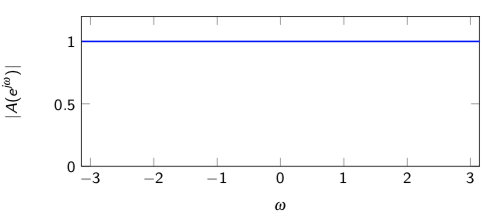
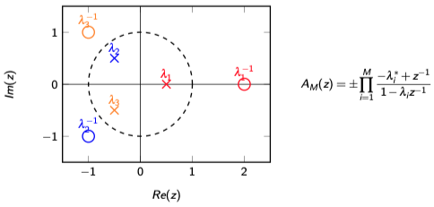
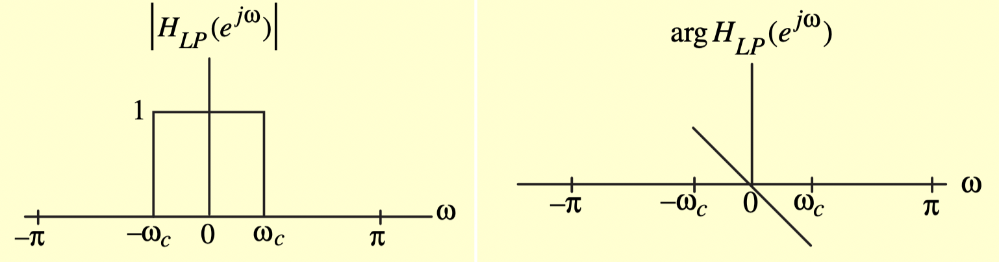
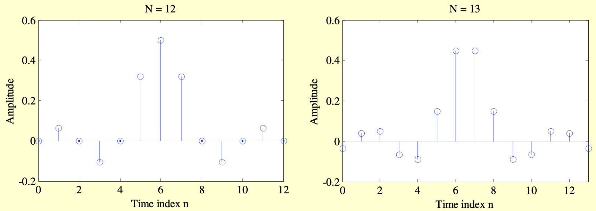
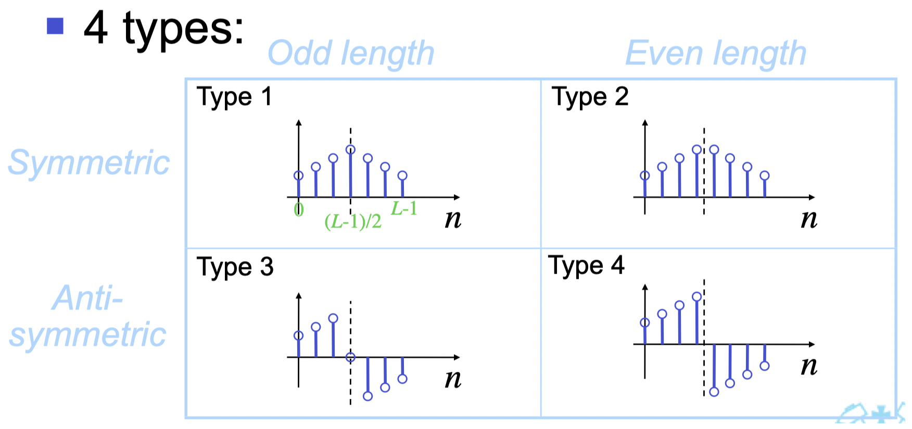
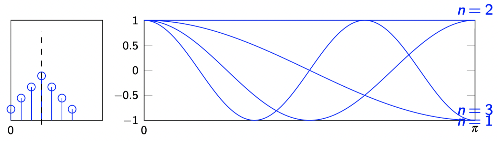
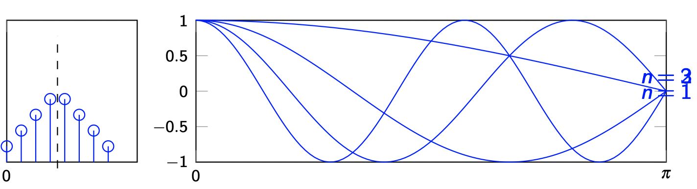
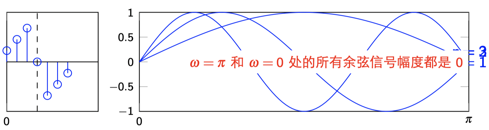
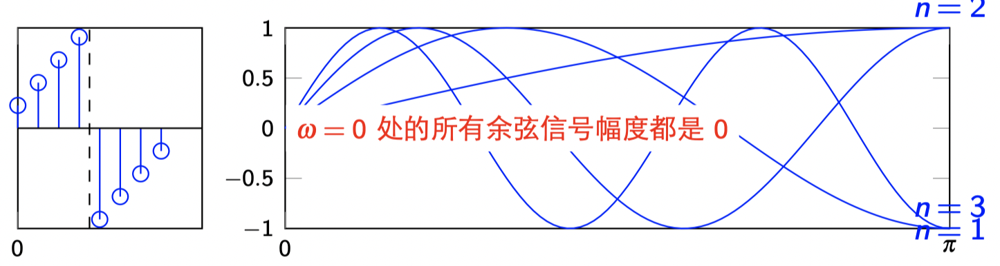
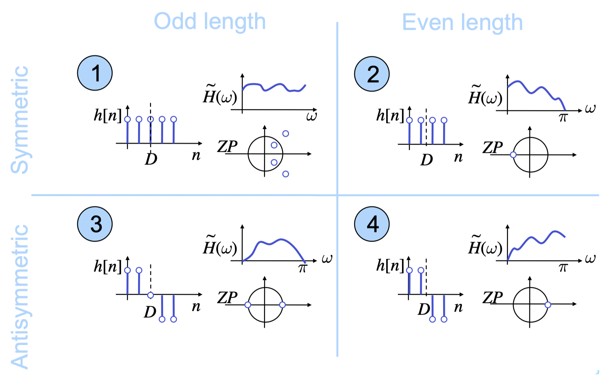

6. 变换域中的离散时间系统¶
6.1. 全通数字滤波器¶
我们学过了低通滤波器、高通滤波器、带通滤波器、带阻滤波器，那么本节将要学习的全通滤波器又是什么？
全通滤波器为幅度响应为1，即
$$ |A(e^{j\omega})|=1,\ \forall \omega $$
含义就是所有的频率成分都能通过系统，且幅度增益都等于1。

全通滤波器既然让所有的频率成分都通过，那岂不是没有意义？
答案是否，因为除了幅度响应，相位响应也很重要。而全通函数虽然幅度响应恒等于1，但是相位响应可以是任意的。因此，全通滤波器通常被用来作为相位补偿模块。
6.1.1. 全通传输函数的形式¶
只考虑实系统的话，$h[n]\in \mathbb{R}$，根据DTFT变换的对称性质可以得到
$$ {A}^*(e^{j\omega}) = {A}(e^{-j\omega}) $$
那么
$$ |A(e^{j\omega})|^2=A(e^{j\omega})A^*(e^{j\omega})=A(e^{j\omega})A(e^{-j\omega})= A(z)A(z^{-1})\vert_{z=e^{j\omega}}=1 \label{eq:3} $$
另外，假设$A(z)$具有如下函数形式
$$ {A}(z) = \frac{\sum_{k=0}^M p_k z^{-k}}{\sum_{k=0}^N d_k z^{-k}} = \frac{z^{-M}\sum_{k=0}^M p_k z^{M-k}}{\sum_{k=0}^N d_k z^{-k}} \label{eq:4} $$
相应的$A(z^{-1})$可以计算出来
$$ {A}(z^{-1}) = \frac{\sum_{k=0}^M p_k z^{k}}{\sum_{k=0}^N d_k z^{k}} = \frac{z^M\sum_{k=0}^M p_k z^{k-M}}{\sum_{k=0}^N d_k z^{k}} \label{eq:5} $$
根据公式$\eqref{eq:3}\eqref{eq:4}\eqref{eq:5}$可以得到
$$ {A}(z) {A}(z^{-1}) = \frac{z^{-M}\sum\limits_{k=0}^M p_k { z^{M-k}}}{\sum\limits_{k=0}^N d_k {z^{-k} }}\cdot \frac{z^M\sum\limits_{k=0}^M p_k {z^{k-M}}}{\sum\limits_{k=0}^N d_k { z^{k}}} = 1 $$
那么根据对应项系数相等的条件可以得到
$$ M=N\ p_{M-k}=d_k $$
将这个结果带入到公式$\eqref{eq:4}$中，我们可以得到全通函数的一般形式
令$D_M(z)=1+d_1z^{-1}+\cdots +d_Mz^{-M}$，全通函数简化形式为
$$ A_M(z) = \pm \frac{z^{-M}D_M(z^{-1})}{D_M(z)} $$

6.1.2. 全通传输函数的零极点分布¶
下面我们来分析一下全通函数的额零极点分布。假设，$z=\lambda$为传输函数$A_M(z)$的零点，即
$$ A_M(\lambda) = 0 \Rightarrow D_M(\lambda^{-1})=0\Rightarrow A_M(\lambda^{-1}) = \infty $$
也就是说，$z=\lambda^{-1}$为传输函数$A_M(z)$的极点。这说明，如果在z-平面上存在一个零点$z=\lambda$，那么必然存在一个与之对应的点$z=\lambda^{-1}$为该传输函数的极点，即零点和极点关于单位圆镜像对称。
反之同理，如果在z平面上存在一个极点$z=\lambda$，那么必然存在一个与之对应的点$z=\lambda^{-1}$为该传输函数的零点，即极点与零点关于单位圆镜像对称。

6.1.3. 全通传输函数的幅度特性¶
不失一般性，我们可以将全通传输函数$\eqref{eq:8}$的分子和分母分别因式分解，转换成如下级联形式
那么我们只需要分析其中一个子系统（一对零极点）结构的幅度特性，然后推广到M阶就可以了。令
$$ {A}(z) = \frac{-\lambda^*+z^{-1}}{1-\lambda z^{-1}} $$
写成极坐标形式，$z=|z|e^{j\omega},\lambda=r e^{j\omega},r>0$。一般来说，我们考虑的系统都是因果稳定的，所以极点肯定是在单位圆内，$r<1$。
可以计算出幅度平方为
$$ |{A}(z)|^2 = \frac{1-2r|z|\cos(\omega-\phi)+r^2|z|^2}{|z|^2-2r|z|\cos(\omega-\phi)+r^2}=1- \frac{(1-r^2)(|z|^2-1)}{|z|^2-2r|z|\cos(\omega-\phi)+r^2} $$
当$|z|<1$时（单位圆内），$|A(z)|^2>1$
当$|z|>1$时（单位圆外），$|A(z)|^2<1$
当$|z|=1$时（单位圆上），$|A(z)|^2=1$
我们可以形象的将全通函数的幅度性质用一个“帽子”来形容，帽沿表示单位圆，等高的，且恒定为1（全通）；帽尖肯定是在帽沿的内面，肯定是高于帽沿，即高度大于1；帽边表示单位圆外，肯定低于帽沿，即高度小于1。
思考一个问题，因果稳定的全通函数在单位圆内可能存在零点吗？为什么？
6.1.4. 全通传输函数的相位特性¶
实系统全通传输函数的相位响应$\theta(\omega)$或者表示为$\arg[A_M(e^{j\omega})]$，具有如下三个性质：
$\frac{d\theta(\omega)}{d\omega} < 0$，即关于角频率$\omega$是单调递减的；
$\theta(\omega)\leq 0$，非负；
$M$阶稳定实系统全通传输函数的群延迟$\tau_g(\omega)=-\frac{d\theta}{d\omega}$，满足
$$ \int_0^\pi \tau_g(\omega)d\omega=M\pi $$
考虑一阶因果稳定实系数全通函数
$$ {A}(z) = \frac{-\lambda^*+z^{-1}}{1-\lambda z^{-1}} \label{eq:16} $$
频率响应为（令$z=e^{j\omega}$）
$$ A(e^{j\omega}) = \frac{-\lambda^*+e^{-j\omega}}{1-\lambda e^{-j\omega}} = e^{-j\omega}\left[\frac{1-re^{j(\omega-\phi)}}{1-re^{-j(\omega-\phi)}}\right] $$
相位函数为
$$ \theta(\omega) = -\omega - 2\arctan\left[\frac{r\sin(\omega-\phi)}{1-r\cos(\omega-\phi)}\right] $$
单调递减¶
$$ \frac{d\theta}{d\omega} = -\frac{(1-r^2)}{|1+re^{-j(\omega-\phi)}|^2} < 0 ,\forall r<1 $$
群延迟性质¶
系统$\eqref{eq:16}$的群延迟为
等式两边积分可以得到
$$ \int_{0}^{\pi} \tau_1(\omega) d\omega = \left[ 2\arctan \left( \frac{r+1}{r-1}\tan\frac{\phi-\omega}{2} \right) \right]_{0}^{\pi} = \pi $$
那么对于任意$M$阶稳定实系统全通传输函数的群延迟满足
$$ {A}(z) = \prod_{i-1}^M A_i(z) \Rightarrow \int_0^\pi \tau_g (\omega) d\omega = M\pi $$
6.1.5. 结论¶
全通传输函数的幅度响应为1；
全通传输函数的分子和分母为镜像对称多项式；
全通传输函数的零点和极点，极点和零点，关于单位圆镜像对称；
全通传输函数的幅度特性类似一个帽子（单位圆内大于1，单位圆外小于1，单位圆上等于1）；
全通传输函数的相位特性有三点：
单调递减
非负
总延迟为$M\pi$
6.2. 线性相位系统¶
最常见的一类线性相位滤波器的频率响应为
$$ H(e^{j\omega})=e^{-j\omega D} $$
幅度响应为
$$ \vert H(e^{j\omega})\vert = 1 $$
相位响应为
$$ \theta(w) = Dw $$
那么，当 输入信号为$x[n]$的时候，输出仅仅是$x[n]$延迟$D$个样本之后的结果，而信号本身的波形不会发生任何变化。假设$X(e^{j\omega})$为输入信号$x[n]$的DTFT变换，那么输出$y[n]$的DTFT变换为
$$ Y(e^{j\omega}) = H(e^{j\omega}) X(e^{j\omega})=e^{-j\omega D}X(e^{j\omega}) $$
根据DTFT变换的时移定理，可以得到输出$y[n]$的形式为
$$ y[n] = \mathcal{F}^{-1}{Y(e^{j\omega})} = x[n-D] $$
NOTE: think about when $D$ is not integer?
6.2.1. Example：理想线性相位滤波器¶
考虑理想低通滤波器

很容易可以写出该滤波器的幅度响应和相位响应，从而得到该滤波器的频率响应为
$$ H_{LP}(e^{j\omega})=\begin{cases} e^{-j\omega n_0},& 0<|w|<\omega_c \ 0,& \omega_c\leq |w| \leq \pi \end{cases} $$
那么该系统的冲激响应序列为：
$$ {h}_{LP}[n] = \frac{\sin \omega_c(n-n_0)}{\pi (n-n_0)}, -\infty < n < \infty $$
冲激响应序列的长度为双边无限长，因此非因果，且不可实现。那么需要将无限长序列进行截断（只保留0到$N$的点）
$$ \hat{h}_{LP}[n] = \frac{\sin \omega_c(n-n_0)}{\pi (n-n_0)}, 0 \leq n \leq N $$
NOTE:该序列是有限长，且因果的。

Question：线性系统的冲激响应序列都是对称的吗？
6.2.2. 线性相位FIR滤波器的传输函数及其冲激响应序列¶
线性相位FIR传输函数的相位响应必然可以写成如下形式：
$$ \theta(\omega)=c\omega+\beta $$
那么，任意的线性相位系统传输函数的极坐标形式为
$$ H(e^{j\omega}) = e^{j\theta(\omega)}|H(e^{j\omega})| = e^{j(c\omega+\beta)}\tilde{H}(e^{j\omega}) \label{eq:10} $$
其中$\tilde{H}(e^{j\omega})$为零相位响应（实函数）。总结一下：
==线性相位 = 零相位$\times$线性相移==
因此，我们只需要知道零相位部分的传输函数形式，就可以通过时移定理，得到线性相位系统的传输函数。
如果只考虑实系统$h[n]\in \mathbb{R}$，根据实序列的DTFT变换的对称性质，可以得到
$$ H(e^{j\omega}) = H^*(e^{-j\omega}) $$
那么
$$ e^{j(c\omega+\beta)} \tilde{H}(e^{j\omega}) =e^{-j(c(-\omega)+\beta)}\tilde{H}(e^{-j\omega}) =e^{j(c\omega-\beta)}\tilde{H}(e^{-j\omega}) \ e^{j\beta}\tilde{H}(e^{j\omega})=e^{-j\beta}\tilde{H}(e^{-j\omega}) \label{12} $$
另外：
这时，需要分成两种情况来考虑：
当$\tilde{H}(e^{j\omega})= \tilde{H}(e^{-j\omega})$，带入到公式$\eqref{12}$中得到，$e^{j\beta}=e^{-j\beta}$，因此$\beta=0$或者$\beta=\pi$。
$h[n]$满足$H(e^{j\omega})=\sum_{n=0}^N h[n] e^{-j\omega n}$
将$\beta$的值带入到公式$\eqref{eq:10}$中，可以得到
$$ \tilde{H}(e^{j\omega})=\pm e^{-j\omega c}H(e^{j\omega})=\pm \sum_{n=0}^N h[n] e^{-j\omega(c+n)} $$
因为$\tilde{H}(e^{j\omega})$为偶函数，可以得到
$$ \tilde{H}(-e^{j\omega})=\pm e^{j\omega c}H(e^{j\omega})=\pm \sum_{n=0}^N h[n] e^{j\omega(c+n)} =\tilde{H}(e^{j\omega}) $$
根据公式(14)和(15)可以推导出$h[n]=h[N-n]$，且$c=-N/2$。
当$\tilde{H}(e^{j\omega})=- \tilde{H}(e^{-j\omega})$，同样带入到公式$\eqref{12}$中得到，$e^{j\beta}=-e^{-j\beta}$，因此$\beta=\pm \pi /2$
将$\beta$的值带入到公式$\eqref{eq:10}$中，可以得到
$$ \tilde{H}(e^{j\omega})=\pm e^{-j\omega c}H(e^{j\omega})=\pm \sum_{n=0}^N h[n] e^{-j\omega(c+n)} $$
因为$\tilde{H}(e^{j\omega})$为奇函数，可以得到
$$ \tilde{H}(-e^{j\omega})=\pm e^{j\omega c}H(e^{j\omega})=\pm \sum_{n=0}^N h[n] e^{j\omega(c+n)} =-\tilde{H}(e^{j\omega}) $$
根据公式(14)和(15)可以推导出$h[n]=-h[N-n]$，且$c=-N/2$。
因此，线性相位FIR滤波器的冲激响应序列肯定是对称的。根据对称性，可以分为偶对称和反对称两种情况。此外，还需要考虑冲激响应序列长度为奇数和偶数两种情况。所以，我们可以将上述的几种情况，分成如下四种组合：
奇长度对称：又称为1型线性相位FIR滤波器
偶长度对称：又称为2型线性相位FIR滤波器
奇长度反对称：又称为3型线性相位FIR滤波器
偶长度反对称：又称为4型线性相位FIR滤波器

1型线性相位FIR滤波器¶
1型线性相位FIR滤波器的冲激响应序列为奇长度对称序列，$h[n]=h[N-n]$，且$N+1$为奇数。

分析该滤波器的频率响应：
$$ H(e^{j\omega}) = \sum_{n=0}^N h[n] e^{-j\omega n} = e^{-j\omega N/2} \underset{=\tilde{H}(e^{j\omega})}{\underbrace{\left(h[\frac{N}{2}] + 2 \sum_{n=1}^{N/2} h[\frac{N}{2}-n] \cos \omega n\right)}} $$
相位响应为$\theta(\omega)=-\frac{N}{2}\omega$，幅度响应为$|H(e^{j\omega})|=h[\frac{N}{2}] + 2 \sum_{n=1}^{N/2} h[\frac{N}{2}-n] \cos \omega n$。如图所示，给出了$n=0,1,2,3$时的幅度响应各个分量。
2型线性相位FIR滤波器¶
2型线性相位FIR滤波器的冲激响应序列为偶长度对称序列，$h[n]=h[N-n]$，且$N+1$为偶数。

分析该滤波器的频率响应：
$$ H(e^{j\omega}) = \sum_{n=0}^N h[n] e^{-j\omega n} = e^{-j\omega N/2} \underset{=\tilde{H}(e^{j\omega})}{\underbrace{\left( 2 \sum_{n=1}^{(N+1)/2} h[\frac{N+1}{2}-n] \cos \left(\omega \left(n-\frac{1}{2}\right)\right)\right)}} $$
相位响应为$\theta(\omega)=-\frac{N}{2}\omega$，幅度响应为$|H(e^{j\omega})|=2 \sum_{n=1}^{(N+1)/2} h[\frac{N+1}{2}-n] \cos \left(\omega \left(n-\frac{1}{2}\right)\right)$。如图所示，给出了$n=0,1,2,3$时的幅度响应各个分量，可以发现，无论$n$取值为多少，在$\omega=\pi$位置的幅度贡献始终为0，而其他频率点则不一定。
因此，2型线性相位滤波器肯定不允许高频分量通过。
3型线性相位FIR滤波器¶
3型线性相位FIR滤波器的冲激响应序列为奇长度反对称序列，$h[n]=-h[N-n]$，且$N+1$为奇数，很明显$h[N/2]=0$。

分析该滤波器的频率响应：
$$ H(e^{j\omega}) = \sum_{n=0}^N h[n] e^{-j\omega n} = je^{-j\omega N/2} \underset{=\tilde{H}(e^{j\omega})}{\underbrace{\left( 2 \sum_{n=1}^{N/2} h[\frac{N}{2}-n] \sin \omega n\right)}} $$
相位响应为$\theta(\omega)=-\frac{N}{2}\omega+\frac{\pi}{2}$，幅度响应为$|H(e^{j\omega})|=2 \sum_{n=1}^{N/2} h[\frac{N}{2}-n] \sin \omega n$。如图所示，给出了$n=0,1,2,3$时的幅度响应各个分量，可以发现，无论$n$取值为多少，在$\omega=0$和$\omega=\pi$位置的幅度贡献始终为0，而其他频率点则不一定。
因此，3型线性相位滤波器肯定不允许低频和高频分量通过。
4型线性相位FIR滤波器¶
4型线性相位FIR滤波器的冲激响应序列为偶长度反对称序列，$h[n]=-h[N-n]$，且$N+1$为偶数。

分析该滤波器的频率响应为
$$ H(e^{j\omega}) = \sum_{n=0}^N h[n] e^{-j\omega n} = je^{-j\omega N/2} \underset{=\tilde{H}(e^{j\omega})}{\underbrace{\left( 2 \sum_{n=1}^{(N+1)/2} h[\frac{N+1}{2}-n] \sin \left(\omega \left(n-\frac{1}{2}\right) \right) \right)}} $$ 那么对应的相位响应为：$\theta(\omega)=-\frac{N}{2}\omega+\pi/2$，幅度响应为$|H(e^{j\omega})|=2 \sum_{n=1}^{(N+1)/2} h[\frac{N+1}{2}-n] \sin \left(\omega \left(n-\frac{1}{2}\right) \right)$。如图所示，给出了$n=0,1,2,3$时的幅度响应各个分量。可以发现，无论$n$取任何值，在$\omega=0$处的幅度贡献始终为0。
因此，4型线性相位滤波器肯定不允许低频分量通过。
6.2.3. 线性相位FIR滤波器的Z域分析¶
FIR线性相位滤波器满足对称或者反对称性质
$$ h[n]=\pm h[N-n] \Rightarrow H(z)=\pm z^{-N}H(z^{-1}) $$
所以如果在$z=\xi$处有一个零点，那么在$z=1/\xi$处也会存在一个零点（镜像对称），因为
$$ H(\xi)=0\Rightarrow H(\xi^{-1})=0 $$

1-2型线性相位FIR滤波器¶
1-2型线性相位滤波器的冲激响应序列满足对称性质
$$ h[n]=h[N-n] \Rightarrow H(z)=z^{-N}H(z^{-1}) \Rightarrow H(-1)=(-1)^NH(-1) $$
那么对于2-型，偶长度对称序列，$N$为奇数，那么$H(-1)=-H(-1)\Rightarrow H(-1)=0$。也就是说，在$z=-1$处始终有一个0点。那么，也就印证了2型线性相位滤波器的性质。
3-4型线性相位FIR滤波器¶
3-4型线性相位滤波器的冲激响应序列满足反对称性质
$$ h[n]=-h[N-n] \Rightarrow H(z)=-z^{-N}H(z^{-1}) $$
那么，
当$z=1$，$H(1)=-H(1)$，也就是说$H(1)=0$。
当$z=-1$，$H(-1)=-(-1)^NH(-1)$，那么当$N$为偶数时（3型FIR），$H(-1)=0$。
上述两个结论也正好分别印证了3型线性相位滤波器的性质和4型线性相位滤波器的性质。

6.2.4. 结论¶
线性相位FIR滤波器的冲激响应序列必须是对称或者反对称的；
线性相位FIR滤波器根据对称性质和滤波器长度分为1-4型，四种类型；
2型FIR线性相位滤波器不能用来设计高通滤波器，因为在$z=-1$处有一个零点；
3-4型FIR线性相位滤波器不能用来设计低通滤波器，因为在$z=1$处都有零点；
3型FIR线性相位滤波器不能用来设计高通滤波器，因为在$z=-1$处有一个零点。